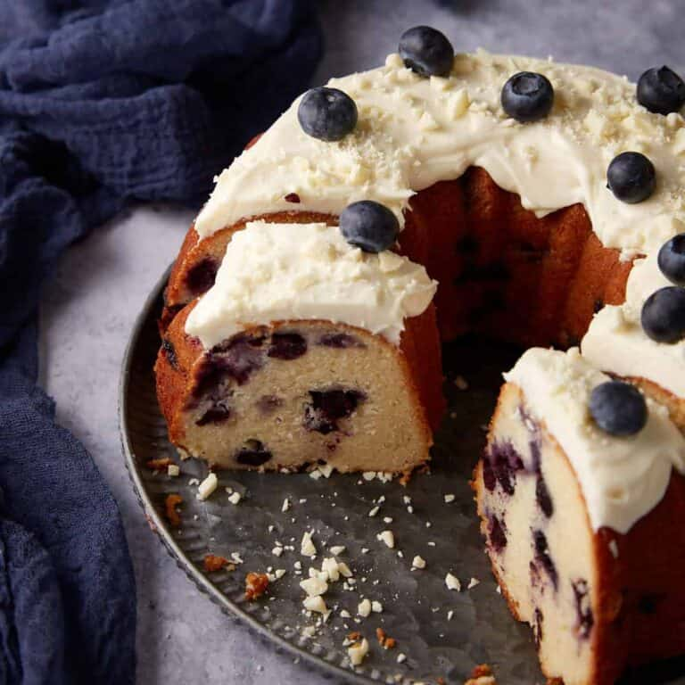

Lemon Blueberry Bundt Cake

Description
A tasty cake that is great for big outings due to the easy to cut slices. The lemon Blueberry Bundt cake is a delicious and moist combination that is a staple of southern culture.
Prep Time: 20 minutes | Cook Time: 45 minutes | Servings: 16
Ingredients
- 1 Cup of Butter Softened
- 11/2 Cups of Sugar
- 3 Eggs
- 1 tbs Vanilla Extract
- 1 tbs Lemon Zest 1 Lemon
- 2 1/2 Cups of Flour
- 1 tsp of Baking Powder
- 1/2 tsp Baking Soda
- 1/2 tsp Salt
- 1 Cups of Vanilla Greek Yogurt
- 2 Cups of Fresh or Frozen Blueberries
Frosting Ingredients
- 4oz Cream Cheese Softened
- 4 tbs Butter Softened
- 1 1/2 Cups of Powdered Sugar
- 1 tsp Vanilla Extract
- White Chocolate Optional
Cooking Instructions
- Preheat the oven to 350 degrees. Spray bundt pan with cooking spray.
- Add the butter and sugar in the bowl until light and fluffy. 2 minutes later add eggs one at a time. Then add vanilla extract and lemon zest.
- In a seperate bowl, whisk together the flour, baking powder, soda and salt.
- Add a tbs of flour to the fresh berries. If you are using frozen bluberries than leave them until unfrozen and ready to add.
- Add a 1/3 of flour mixture to the butter mixture, alternating with yogurt, starting and ending with the flour mixture. Mix until just combined and smooth.
- Gently fold in blueberries and spoon the batter into the bundt pan, levelling off the surface so that it is even.
- Bake for 45-50 minutes until the top is golden brown and toothpick comes out clean.
- Let it cool for 10 minutes.
Frosting Instructions
- Mix together all the ingredients, except the white chocolate, until creamy smooth. Smooth over the top of the cooled cake and sprinkle with white chocolate.
Nutrition
Calories: 378kcal | Carbs: 50g | Protein: 5g | Fat: 18g
Recipe Credits
Original Creator Recipe